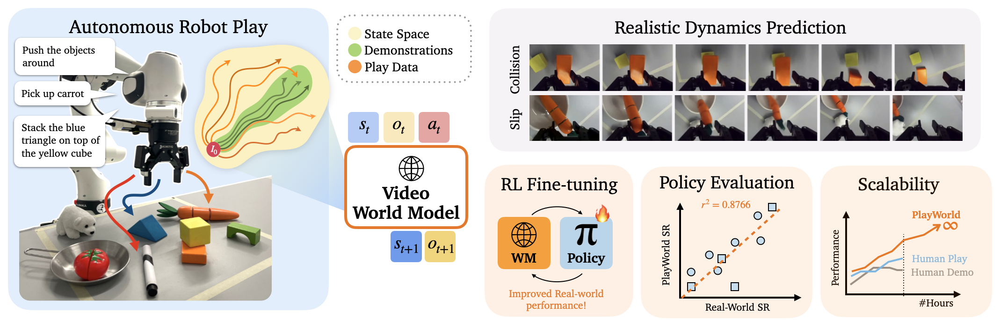
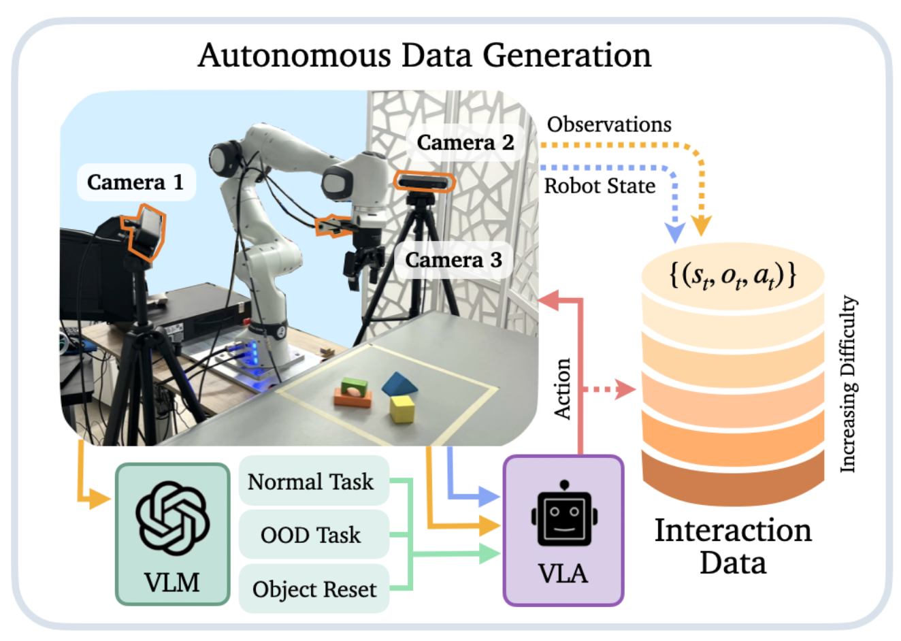
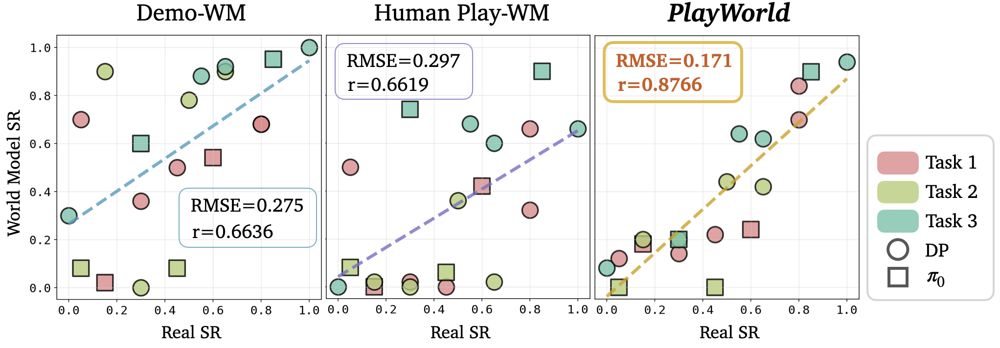
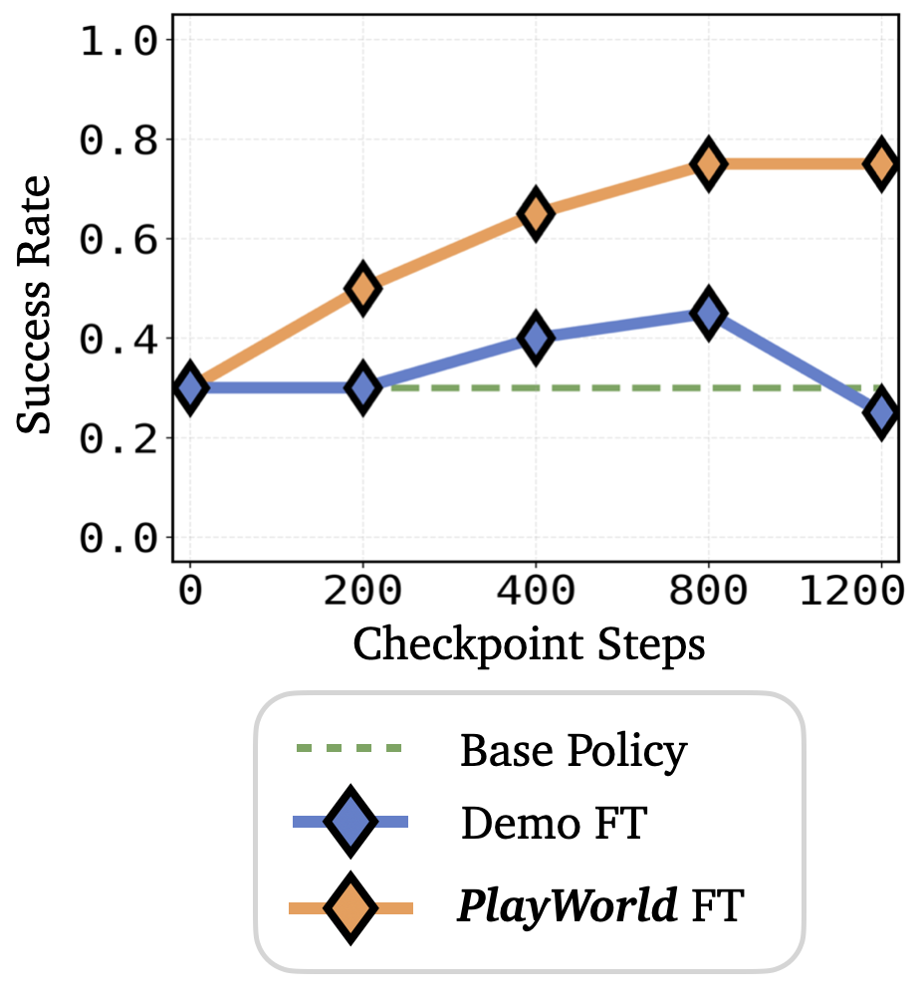
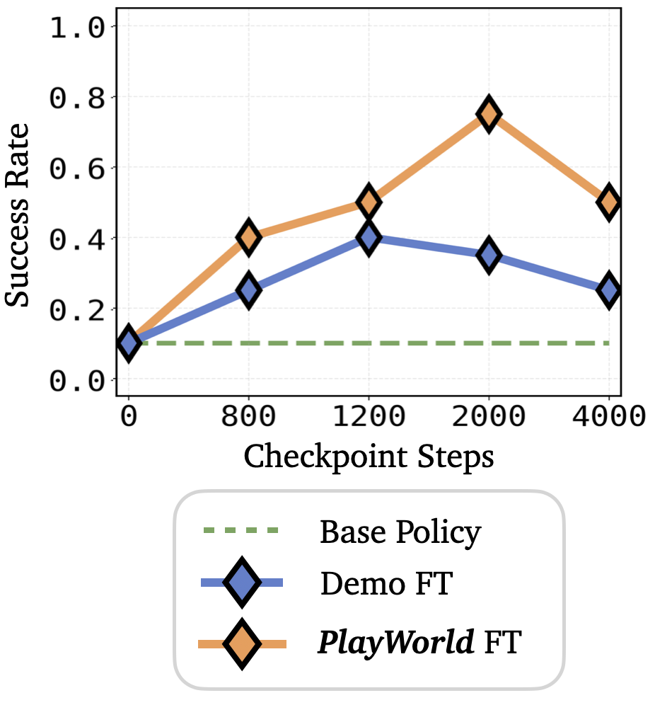
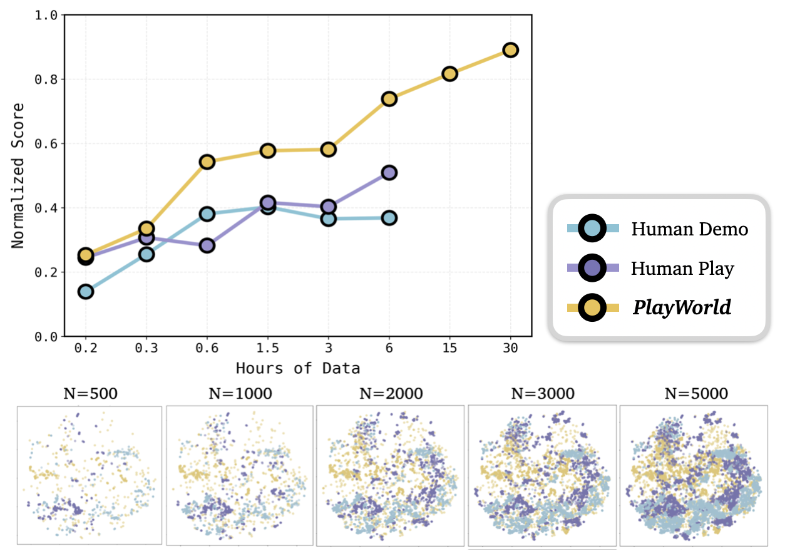
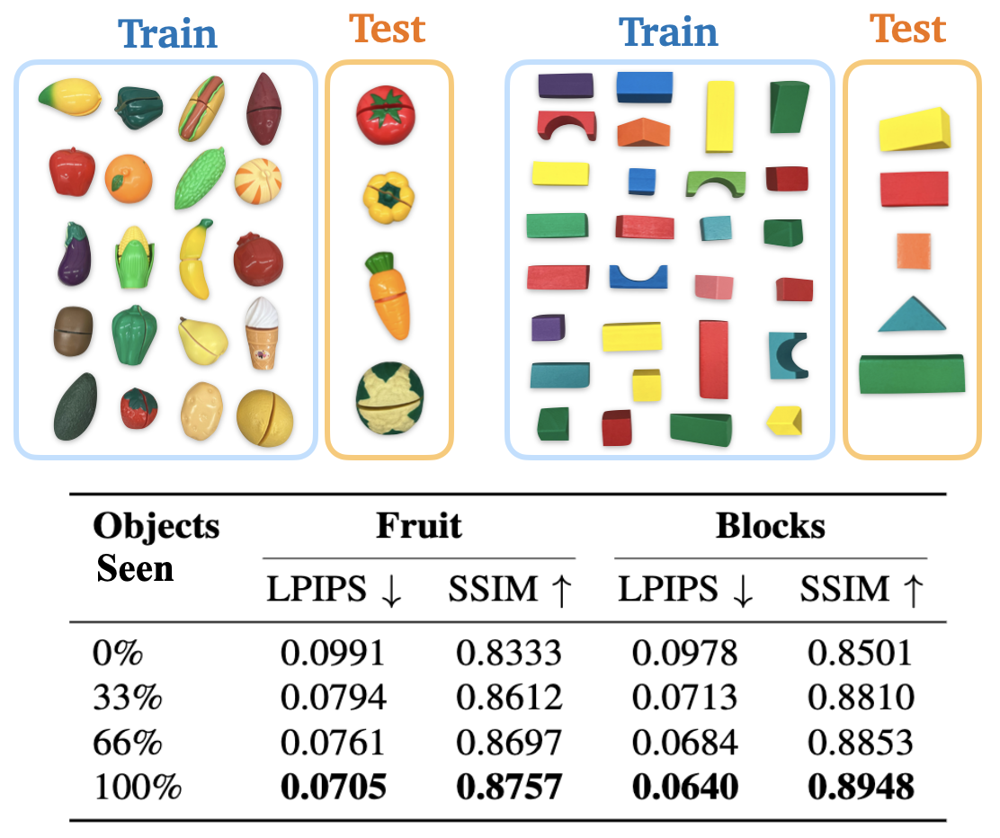

We introduce PlayWorld, a scalable framework for training high-fidelity Action-Conditioned Robot World Models using Autonomous Play. Instead of relying on success-biased human demonstrations, it continuously gathers diverse, contact-rich interactions and failure cases that better match downstream policy behaviors. The resulting model enables accurate dynamics prediction, reliable policy evaluation, and effective world-model-based RL fine-tuning that improves real-world performance.

System overview for autonomous play-data collection.
Training accurate
robot world models requires data that captures diverse physical interactions. Instead of relying on
success-biased human demonstrations, we leverage robot play consisting of task-agnostic
interactions where the robot freely explores how objects respond to contact to obtain broader coverage
of real-world dynamics.
PlayWorld generates play
data at scale by using a VLM to propose diverse scene-grounded instructions and using a generalist
policy to execute them. As shown above, combined with safety checks and automatic resets, this process
yields rich, contact-heavy interactions and enables hours of unsupervised data collection with minimal
human intervention, including over-night (videos are shown at 50x speed).
The diverse interactions present in PlayWorld data enable the model to learn richer physical dynamics, resulting in predictions that more closely match real-world object behavior. Below, we provide side-by-side comparisons showing that PlayWorld predictions closely track ground-truth outcomes across interaction types, while baseline models often exhibit degraded object fidelity and unrealistic physics.
Accurate dynamics prediction is critical for evaluating robot policies with fine behavioral difference and/or failure modes. To test whether PlayWorld supports reliable policy evaluation, we train a diverse set of policies with different architectures and demonstration qualities, producing a wide range of behaviors and failure modes. As shown below, PlayWorld’s predictions closely match real-world success rates and outcome distributions, enabling more reliable evaluation than models trained on human-collected data. We also show qualitative videos below to show the different predicted policy behaviors under different world model + policy combinations.

Success Rate Correlation between Real and World Models trained on different data mixtures.
🌍 Real
✅ PlayWorld
⚠️ Demo-WM
World models make reinforcement learning far more practical by allowing policies to improve through simulated interaction rather than costly real-world trials. However, this requires highly accurate dynamics prediction to prevent policies from exploiting model errors and learning behaviors that would fail in reality. Using PlayWorld, we perform RL fine-tuning on two manipulation tasks entirely within the world model and observe substantial improvements in real-world performance, with policies learning more robust strategies and recovery behaviors.
Baseline
PlayWorld Fine-tuned

Baseline
PlayWorld Fine-tuned



Data Scaling. PlayWorld enables scalable data collection that continues to expand
interaction coverage and improve world model quality as more interaction data is gathered. As shown on the
left, models trained on larger play datasets achieve steadily better prediction accuracy, while models
trained on human demonstrations show much weaker gains when scaled up.
Object Generalization. As the diversity of training objects increases, PlayWorld learns
shared physical interaction patterns (e.g., contact, slip, deformation), leading to more accurate
predictions on objects not seen during training.
@misc{yin2026playworldlearningrobotworld,
title={PlayWorld: Learning Robot World Models from Autonomous Play},
author={Tenny Yin and Zhiting Mei and Zhonghe Zheng and Miyu Yamane and David Wang and Jade Sceats and Samuel M. Bateman and Lihan Zha and Apurva Badithela and Ola Shorinwa and Anirudha Majumdar},
year={2026},
eprint={2603.09030},
archivePrefix={arXiv},
primaryClass={cs.RO},
url={https://arxiv.org/abs/2603.09030},
}This website is based on the PolaRiS template.